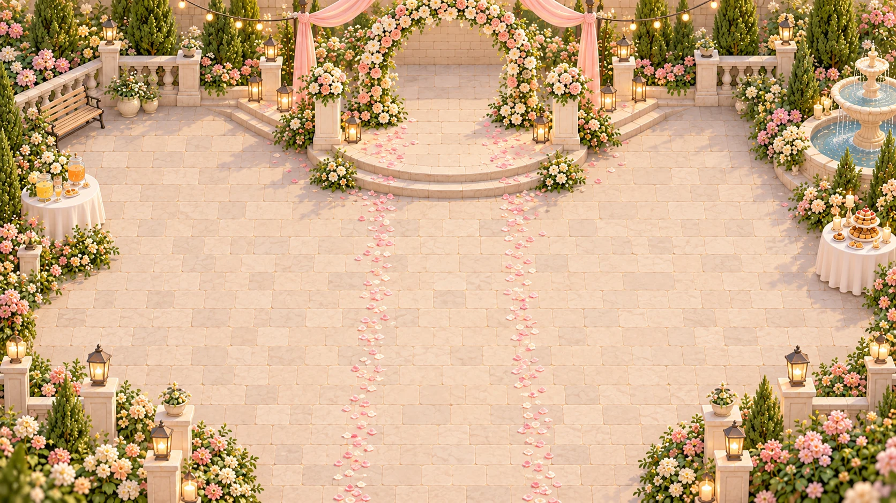
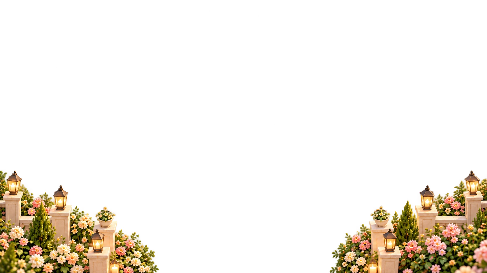

<!doctype html><html lang="zh-CN"><meta charset="utf-8"><meta name="viewport" content="width=device-width,initial-scale=1"><title>婚礼遮挡图层预览</title>
<style>body{margin:24px;background:#f3eee6;color:#574c40;font:14px system-ui}main{max-width:1200px;margin:auto}h1{font-size:24px}nav{display:flex;gap:16px;flex-wrap:wrap;margin:16px 0}.stage{position:relative;aspect-ratio:1672/941;background:repeating-conic-gradient(#d9ddd6 0 25%,#f7f9f4 0 50%) 0/24px 24px}.stage img{position:absolute;inset:0;width:100%;height:100%;object-fit:fill}.stage .original{display:none}.controls{display:flex;gap:16px;flex-wrap:wrap;margin:16px 0}p{line-height:1.7}button,select{padding:8px}small{color:#817361}</style>
<main><h1>前景与两张桌子</h1><p>先检查透明边缘，再打开原背景对照位置。原背景仍包含物件，当前叠加仅用于检查。</p>
<nav><label><input type="checkbox" data-layer="foreground" checked>前景</label><label><input type="checkbox" data-layer="table-left" checked>左饮品桌</label><label><input type="checkbox" data-layer="table-right" checked>右甜点桌</label></nav>
<div class="controls"><label><input id="background" type="checkbox">对照原背景</label><label>图层透明度 <input id="opacity" type="range" min="0" max="1" step="0.05" value="1"></label></div>
<div class="stage"></div><p id="status" role="status"></p><small>图层为独立生成的首轮提取稿，接入前还需制作干净底图并核对边界。</small></main>
<script>const layers=[...document.querySelectorAll('[data-id]')];document.querySelectorAll('[data-layer]').forEach(box=>box.onchange=()=>document.querySelector(`[data-id="${box.dataset.layer}"]`).style.display=box.checked?'block':'none');document.querySelector('#background').onchange=e=>document.querySelector('.original').style.display=e.target.checked?'block':'none';document.querySelector('#opacity').oninput=e=>layers.forEach(img=>img.style.opacity=e.target.value);Promise.all([...document.images].map(img=>img.decode())).then(()=>document.querySelector('#status').textContent='3 个透明图层与原背景已加载。').catch(()=>document.querySelector('#status').textContent='部分素材未能加载，请确认生成文件已就绪。');</script></html>
